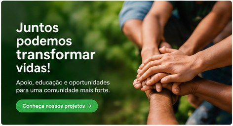
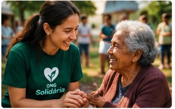

Educação

Apoiamos iniciativas que ampliam o acesso à educação e ao desenvolvimento.

A ONG Solidária atua para ampliar oportunidades e fortalecer comunidades por meio de ações sociais, educação, apoio comunitário e sustentabilidade.
Somos uma organização do terceiro setor que acredita na solidariedade como instrumento para promover inclusão, cidadania e melhoria da qualidade de vida.

Mais do que ajudar, buscamos construir oportunidades e desenvolver ações que gerem impactos positivos e duradouros para as pessoas atendidas.
Apoiamos iniciativas que ampliam o acesso à educação e ao desenvolvimento.

Desenvolvemos ações de arrecadação e distribuição de alimentos para famílias.

Incentivamos práticas de preservação ambiental e conscientização comunitária.
E-mail: contato@ongsolidaria.org
Telefone: (61) 99999-9999
Brasília - DF